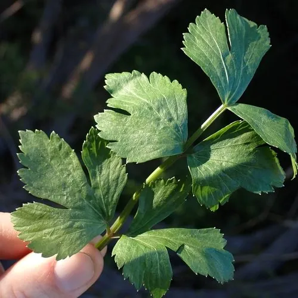

农作物与经济植物 · 植物界
芹菜 Apium graveolens

芹菜的叶柄脆嫩、香气独特，可炒食、凉拌和做馅，是常见的绿叶蔬菜，民间还认为它有降血压的食疗作用。
- 分类
- 门被子植物门纲双子叶植物纲目伞形目科伞形科属芹属
- 栖息环境
- 冷凉湿润的菜地，喜肥沃保水土壤，不耐高温干旱
- 地理分布
- 原产地中海与西亚，现世界各地广泛栽培
- 保护级别
- 暂无评估（栽培作物）
物种志
芹菜是伞形科一二年生草本，株高 0.5–1 m。根为浅根系，叶为二至三回羽状复叶，小叶卵形、边缘有锯齿，叶柄肥厚、有纵棱，绿色或黄绿色。花为复伞形花序，小花白色或黄绿色。果实为双悬果，有芳香气味。芹菜分本芹（中国芹菜）和西芹两大类。
芹菜原产地中海沿岸与西亚，中国栽培历史悠久，各地均有种植。它喜冷凉湿润、光照充足，不耐高温干旱，适宜在保水力强的肥沃土壤中栽培。叶柄脆嫩、香气独特，可炒食、凉拌、做馅、榨汁；芹菜叶也可食用。芹菜富含膳食纤维、维生素和钾，民间认为有平肝降压之效，但芹菜不能替代降压药物，高血压患者仍需遵医嘱治疗。
形态与习性
- 株高0.5–1 m
- 叶柄肥厚有纵棱，脆嫩
- 花复伞形花序，白色
- 类型本芹与西芹
- 营养富含膳食纤维、维生素与钾
趣味知识
- 芹菜分本芹和西芹两大类，本芹叶柄细、香味浓，西芹叶柄宽厚。
- 芹菜的香气来自挥发油，叶和叶柄都能食用。
- 民间认为芹菜能平肝降压，但它不能替代降压药物。